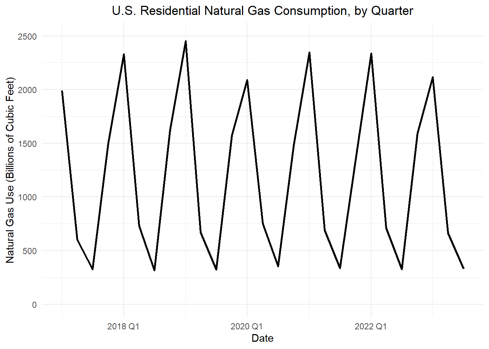

Implement the Holt-Winter method to forecast time series
Compute the Holt-Winters estimate by hand
Use HoltWinters() to forecast additive model time series
Plot the Holt-Winters decomposition of a time series (see Fig 3.10)
Plot the Holt-Winters fitted values versus the original time series (see Fig 3.11)
Superimpose plots of the Holt-Winters predictions with the time series realizations (see Fig 3.13)
Preparation
Review Section 3.4.2 (Page 59 - top of page 60 only)
Small Group Activity: Holt-Winters Model for Residential Natural Gas Consumption (35 min)
The United States Energy Information Administration (EIA) publishes data on the total residential natural gas consumption in the country. This government agency publishes monthly data beginning in January 1973. For the purpose of this example, we will only consider quarterly values beginning in 2017. The data are given in MMcf (thousand-thousand cubic feet, or millions of cubic feet). We convert the data to billions of cubic feet (Bcf) and round to the nearest integer to make the numbers a little more manageable.
The weather is colder in the first and fourth quarters, so the demand for natural gas will be higher then. As illustrated in Figure 1, the difference in the consumption in the lowest and highest quarters of a year tends to be about 2000 Bcf.

Figure 1: Quarterly U.S. natural gas consumption (Bcf)
We will use this information to create an initial estimate of the seasonality of the time series. We will assume that in Quarters 1 and 4, natural gas use is 1000 Bcf above the level of the time series and in Quarters 2 and 3, it is 1000 Bcf below the level of the time series. This is not accurate, but it gives us a reasonable starting point.
The portion of the time series we are using begins in the first quarter of 2017. So we will choose the initial values of \(s_t\) as: \[
s_{Q1} = 1000, ~~~ s_{Q2} = -1000, ~~~ s_{Q3} = -1000, ~~~ s_{Q4} = 1000
\]
With \(p=4\) quarters in a year, we implement initial seasonality estimates in the Holt-Winters model as \[
s_{1-p} = s_{(-3)} = 1000, ~~~ s_{2-p} = s_{(-2)} = -1000, ~~~ s_{3-p} = s_{(-1)} = -1000, ~~~ s_{4-p} = s_{0} = 1000
\]
Table 1: Holt-Winters filter for the quarterly natural gas consumption in the U.S. in billions of cubic feet
$$Quarter$$
$$t$$
$$x_t$$
$$a_t$$
$$b_t$$
$$s_t$$
$$\hat x_t$$
2016 Q1
-3
—
—
—
1000
—
2016 Q2
-2
—
—
—
-1000
—
2016 Q3
-1
—
—
—
-1000
—
2016 Q4
0
—
—
—
1000
—
2017 Q1
1
1990
2017 Q2
2
603
2017 Q3
3
326
2017 Q4
4
1495
2018 Q1
5
2331
1508
-58
805
2313
2018 Q2
6
729
1519
-44
-1012
507
2018 Q3
7
318
1464
-46
-1110
354
2018 Q4
8
1620
1301
-69
693
1994
2019 Q1
9
2451
1315
-52
871
2186
2019 Q2
10
670
1347
-35
-945
402
2019 Q3
11
323
1336
-30
-1091
245
2019 Q4
12
1573
1221
-47
625
1846
2020 Q1
13
2089
1183
-45
878
2061
2020 Q2
14
751
1250
-23
-856
394
2020 Q3
15
354
1271
-14
-1056
215
2020 Q4
16
1481
1177
-30
561
1738
2021 Q1
17
2345
1211
-17
929
2140
2021 Q2
18
690
1264
-3
-800
464
2021 Q3
19
338
1288
2
-1035
253
2021 Q4
20
1344
1189
-18
480
1669
2022 Q1
21
2337
1218
-9
967
2185
2022 Q2
22
710
1269
3
-752
517
2022 Q3
23
327
1290
7
-1021
269
2022 Q4
24
1590
1260
0
450
2023 Q1
25
2115
1238
-4
949
2023 Q2
26
663
1270
3
-723
2023 Q3
27
329
1288
6
-1021
2023 Q4
28
—
—
—
2024 Q1
29
—
—
—
2024 Q2
30
—
—
—
2024 Q3
31
—
—
—
2024 Q4
32
—
—
—
2025 Q1
33
—
—
—
2025 Q2
34
—
—
—
2025 Q3
35
—
—
—
2025 Q4
36
—
—
—
Holt-Winters Update Equations (Additive Model)
Recall the three Holt-Winters update equations for an additive model are:
where \(\{x_t\}\) is a time series from \(t=1\) to \(t=n\) that has seasonality with a period of \(p\) time units; at time \(t\), \(a_t\) is the estimated level of the time series, \(b_t\) is the estimated slope, and \(s_t\) is the estimated seasonal component; and \(\alpha\), \(\beta\), and \(\gamma\) are parameters (all between 0 and 1).
The forecasting equation is: \[
\hat x_{n+k|n} = a_n + k b_n + s_{n+k-p}
\]
Apply Holt-Winters filtering to these data. Use \(\alpha = \beta = \gamma = 0.2\).
Find \(a_1\)
Find \(b_1\)
Compute the missing values of \(a_t\), \(b_t\), and \(s_t\) for all quarters from Q1 of 2017 to the end of the data set.
Find \(\hat x_t\) for all rows where \(t \ge 1\). Note that the expression to compute \(\hat x_t\) is different for the rows with data versus the rows where forecasting is required.
Superimpose a sketch of your Holt-Winters filter and the associated forecast on Figure 1.
Small Group Activity: Application of Holt-Winters in R using the Baltimore Crime Data (20 min)
Background
The City of Baltimore publishes crime data, which can be accessed through a query. This dataset is sourced from the City of Baltimore Open Data. You can explore the data on data.world.
The data set consists of 285807 rows and 12 columns. There are a few key variables:
Date and Time: Records the date and time of each incident.
Location: Detailed coordinates of each incident.
Crime Type: Description of the type of crime.
When exploring a new time series, it is crucial to carefully examine the data. Here are a few rows of the original data set. Note that the data are not sorted in time order.
CrimeDate
CrimeTime
CrimeCode
Location
Description
Inside.Outside
Weapon
Post
District
Neighborhood
Location.1
Total.Incidents
11/12/2016
02:35:00
3B
300 SAINT PAUL PL
ROBBERY - STREET
O
NA
111
CENTRAL
Downtown
(39.2924100000, -76.6140800000)
1
11/12/2016
02:56:00
3CF
800 S BROADWAY
ROBBERY - COMMERCIAL
I
FIREARM
213
SOUTHEASTERN
Fells Point
(39.2824200000, -76.5928800000)
1
11/12/2016
03:00:00
6D
1500 PENTWOOD RD
LARCENY FROM AUTO
O
NA
413
NORTHEASTERN
Stonewood-Pentwood-Winston
(39.3480500000, -76.5883400000)
1
11/12/2016
03:00:00
6D
6600 MILTON LN
LARCENY FROM AUTO
O
NA
424
NORTHEASTERN
Westfield
(39.3626300000, -76.5516100000)
1
11/12/2016
03:00:00
6E
300 W BALTIMORE ST
LARCENY
O
NA
111
CENTRAL
Downtown
(39.2893800000, -76.6197100000)
1
11/12/2016
03:00:00
4E
6900 MCCLEAN BLVD
COMMON ASSAULT
I
HANDS
423
NORTHEASTERN
Hamilton Hills
(39.3707000000, -76.5670900000)
1
⋮
⋮
⋮
⋮
⋮
⋮
⋮
⋮
⋮
⋮
⋮
⋮
01/01/2011
23:00:00
7A
2500 ARUNAH AV
AUTO THEFT
O
NA
721
WESTERN
Evergreen Lawn
(39.2954200000, -76.6592800000)
1
01/01/2011
23:25:00
4E
100 N MONROE ST
COMMON ASSAULT
I
HANDS
714
WESTERN
Penrose/Fayette Street Outreach
(39.2899900000, -76.6470700000)
1
01/01/2011
23:38:00
4D
800 N FREMONT AV
AGG. ASSAULT
I
HANDS
123
WESTERN
Upton
(39.2981200000, -76.6339100000)
1
Check Your Understanding
Using the command crime_df |> summary(), we learn that the Total.Incidents always equals 1. What does each row in the data frame represent?
We now summarize the data into a daily tsibble.
Show the code
# Data Summary and Aggregation# Group by dates column and summarize from Total.Incidents columndaily_summary_df <- crime_df |>rename(dates = CrimeDate) |>group_by(dates) |>summarise(incidents =sum(Total.Incidents))# Data Transformation and Formatting# Select relevant columns, format dates, and arrange the datacrime_data <- daily_summary_df |>mutate(dates =mdy(dates)) |>mutate(month =month(dates),day =day(dates),year =year(dates) ) |>arrange(dates) |> dplyr::select(dates, month, day, year, incidents)# Convert formatted data to a tsibble with dates as the indexcrime_tsibble <-as_tsibble(crime_data, index = dates)
Here are a few rows of the data after summing the crime incidents each day.
dates
month
day
year
incidents
2011-01-01
1
1
2011
185
2011-01-02
1
2
2011
102
2011-01-03
1
3
2011
106
2011-01-04
1
4
2011
113
2011-01-05
1
5
2011
131
2011-01-06
1
6
2011
107
⋮
⋮
⋮
⋮
⋮
2016-11-10
11
10
2016
109
2016-11-11
11
11
2016
115
2016-11-12
11
12
2016
69
Here is a time plot of the number of crimes reported in Baltimore daily.
Show the code
# Time series plot of total incidents over timecrime_plot <-autoplot(crime_tsibble, .vars = incidents) +labs(x ="Time",y ="Total Crime Incidents",title ="Total Crime Incidents Over Time" ) +theme(plot.title =element_text(hjust =0.5))# Display the plotcrime_plot
Check Your Understanding
What do you notice about this time plot?
Describe the trend
Is there evidence of seasonality?
Is the additive or multiplicative model appropriate?
Which date has the highest number of recorded crimes? Can you determine a reason for this spike?
The following table summarizes the number of days in each month for which crime data were reported.
We can compute some values to assess the fit of the model:
Show the code
# SS of random termssum(components(crime_hw)$remainder^2, na.rm = T)# RMSEforecast::accuracy(crime_hw)$RMSE# Standard devation of number of incidents each monthsd(crime_monthly_ts1$value)
The sum of the square of the random terms is: 2.4580111^{6}.
The root mean square error (RMSE) is: 187.388486.
The standard deviation of the number of incidents each month is 22.9761197.
Figure 2 illustrates the Holt-Winters decomposition of the Baltimore crime data.
Show the code
autoplot(components(crime_hw))
Figure 2: Monthly Total Number of Crime Reported in Baltimore
In Figure 3, we can observe the relationship between the Holt-Winters filter and the time series of the number of crimes each month.
Show the code
augment(crime_hw) |>ggplot(aes(x = months, y = value)) +coord_cartesian(ylim =c(0,5500)) +geom_line() +geom_line(aes(y = .fitted, color ="Fitted")) +labs(color ="")
Figure 3: Superimposed plots of the number of crimes each month and the Holt-Winters filter
Figure 4 contains the information from Figure 3, with the addition of an additional four years of forecasted values. The light blue bands give the 95% prediction bands for the forecast.
Figure 5: Monthly Total Number of Crime Reported in Baltimore
Show the code
augment(crime_hw2) |>ggplot(aes(x = months, y = avg_value)) +coord_cartesian(ylim =c(0,200)) +geom_line() +geom_line(aes(y = .fitted, color ="Fitted")) +labs(color ="")
Figure 6: Superimposed plots of the number of crimes each month and the Holt-Winters filter
Figure 4 contains the information from Figure 3, with the addition of an additional four years of forecasted values. The light blue bands give the 95% prediction bands for the forecast.
Figure 7: Superimposed plots of the number of crimes each month and the Holt-Winters filter, with four additional years forecasted
References
C. C. Holt (1957) Forecasting seasonals and trends by exponentially weighted moving averages, ONR Research Memorandum, Carnegie Institute of Technology 52. (Reprint at https://doi.org/10.1016/j.ijforecast.2003.09.015).
P. R. Winters (1960). Forecasting sales by exponentially weighted moving averages. Management Science, 6, 324–342. (Reprint at https://doi.org/10.1287/mnsc.6.3.324.)